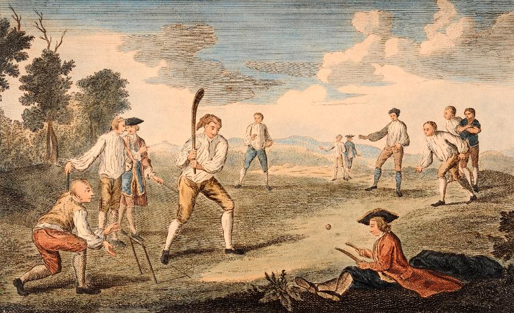

History

There is a consensus of expert opinion that cricket may have been invented during Saxon or Norman times by children living in the Weald, an area of dense woodlands and clearings in south-east England. The first reference to cricket being played as an adult sport was in 1611, and in the same year, a dictionary defined cricket as a boys' game.
“It's always been the most important thing for me to enjoy my cricket.You can cut the tension with a cricket stump.”
ICC
International Cricket Council
The International Cricket Council (ICC) is the global governing body of cricket. It was founded as the Imperial Cricket Conference in 1909 by representatives from Australia, England and South Africa. It was renamed as the International Cricket Conference in 1965, and adopted its current name in 1987. The ICC has its headquarters in Dubai, United Arab Emirates.The ICC does not control bilateral fixtures between member countries (which include all Test matches), and neither does it govern domestic cricket within member countries. It does not make or alter the laws of the game, which have remained under the governance of the Marylebone Cricket Club since 1788.
Read more.
Board of Control for Cricket in India
The BCCI was formed in December 1928 and is a consortium of state cricket associations that select their own representatives who elect the BCCI president. Grant Govan was the first BCCI president and Anthony De Mello was its first secretary.[19] As of February 2023, Roger Binny is the incumbent BCCI president and Jay Shah is secretary.[20][21] The board joined the Imperial Cricket Conference in 1926.The BCCI is an autonomous, private organisation that does not fall under the purview of the National Sports Federation of India and the Government of India has minimal regulation on it. It does not receive any grants or funds from the Ministry of Youth Affairs and Sports.